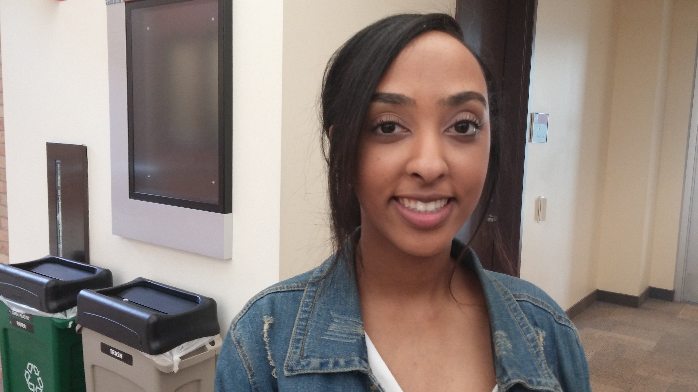
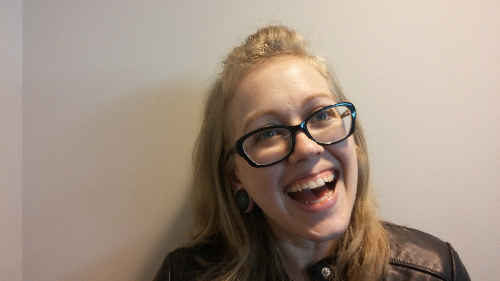

Sarah Elbasher, Sophomore, Psychology
 Nic Liu, Junior, Economics/English
Nic Liu, Junior, Economics/English
"A friend of mine and I are taking a two-week tour of Europe. Either England or France. It'll be my first visit."
" />
Nic Liu, Junior, Economics/English
"Taking classes in literature or ethnic studies. If I don't take classes, I might visit home in China."
" /> Allison Cole, Senior, Accounting"Starting my internship with a state agency and planning my graduation party for the fall."
" /> Steve Le, First year, International Business"I'm not sure. It'll be my first summer in America. Catch some crawfish and go on a road trip."
" />The Metropolitan staff asked some of your fellow students what they were excited about doing this summer. The responses piqued our interest and may spur some adventures of your own.